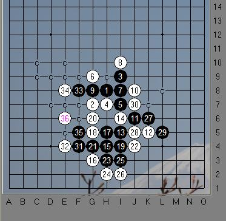

江苏（白）李凌佳琦VS浙江（黑）王赐彧（斜月）
#1 江苏（白）李凌佳琦VS浙江（黑）王赐彧（斜月） 作者：黄药师 发表时间：2009-8-15 13:45:49
“体彩杯”2009年全国少年儿童五子棋锦标赛儿童男子组对局
=======上图对应的爱五子棋谱代码如下，以便你拆解：========
h8g7i9h7i7g9i8i10g8j8i5i6j6k5h4g3h5g5i4g6g4j4h3h2i3i2k6j5l5j7f4e4f8e8f5e6f6f7e7j9g10k8l7l9m10j11j10k10m8k11k9h11
======================================================
#2 Re:江苏（白）李凌佳琦VS浙江（黑）王赐彧（斜月） 作者：李凌佳琦小号 发表时间：2009-8-18 15:46:16
老师把谱发到群共享吧，我回南通下载#3 Re:江苏（白）李凌佳琦VS浙江（黑）王赐彧（斜月） 作者：黄药师 发表时间：2009-8-18 17:03:30
你到这里下载不一样吗？
把这个h8g7i9h7i7g9i8i10g8j8i5i6j6k5h4g3h5g5i4g6g4j4h3h2i3i2k6j5l5j7f4e4f8e8f5e6f6f7e7j9g10k8l7l9m10j11j10k10m8k11k9h11
复制打谱软件里面就行了！
#4 Re:江苏（白）李凌佳琦VS浙江（黑）王赐彧（斜月） 作者：茗弈小刀 发表时间：2009-8-18 18:07:38
支持南通五子發展，我來搞個簡評吧
斜月開局，黑優，一打接近必勝了吧，我還沒地毯，相信有的老師和棋友已經終極。實戰下的2打，為了避開常見變化，黑棋下出了這個7手（不強），白8和10反之即敗，我們小朋友還是拿捏得很準確的。行至10手，黑沒有什么外勢，必須拓展出來，11,13正常。15手活三，如果反個方向更好，如果這樣白檔另一邊就有個活二了。
=======上图对应的爱五子棋谱代码如下，以便你拆解：========
h8g7i9h7i7g9i8i10g8j8i5i6j6k5h4k7
======================================================
很顯然白方考慮黑左邊子力比較多，故防左下，其實自己在右邊子力比較多，因該多集中自己的優勢，所以稍微保守了16.
17手不太喜歡，太縮手縮腳感覺，17手我們不妨左邊拓展一手：
=======上图对应的爱五子棋谱代码如下，以便你拆解：========
h8g7i9h7i7g9i8i10g8j8i5i6j6k5h4g3e7
======================================================
=======上图对应的爱五子棋谱代码如下，以便你拆解：========
h8g7i9h7i7g9i8i10g8j8i5i6j6k5h4g3g10
======================================================
都是不錯的。那么實戰這個17白其實沒必要防這個局部，更好的手段是：
=======上图对应的爱五子棋谱代码如下，以便你拆解：========
h8g7i9h7i7g9i8i10g8j8i5i6j6k5h4g3h5f8
======================================================
黑這樣下邊借助不了這個眠三是攻不出的，自己也多2個活二，何樂而不為呢？
后邊這幾手交換，以后請我們小棋手注意，比如跳的活三，在對手殺不了的時候，我們可以考慮防在外邊，也就是我們常說的外勢和大局觀，這個平時下棋就要刻意去注重，體會。
36手已經殺掉了。如圖：

那么這盤棋，白方小朋友值得表揚，棋風冷靜，穩妥。黑方小朋友要加強，你的問題是盲攻,如果攻不出给对手创造机会，對吧，你這局棋就是，如果不亂攻白怎么殺，還得做棋和找機會。而且已落一子，敵增一兵，望以后下棋多鍛煉大局觀。
［ 黄药师 于 2009-8-18 18:14:44 时奖励此帖[金币加 20 威望加1］
［ 黄药师 于 2009-8-18 18:15:42 时花20金币送鲜花一朵］
#5 Re:江苏（白）李凌佳琦VS浙江（黑）王赐彧（斜月） 作者：黄药师 发表时间：2009-8-18 18:27:03
王赐彧这个小孩子似乎偏爱斜月，后来对阵我们蒋陈昱同学的时候依然开这个，结果和对阵李凌佳琦同学一样，被防死，然后白棋反戈一击，一击致命。#6 Re:Re:江苏（白）李凌佳琦VS浙江（黑）王赐彧（斜月） 作者：飛龍在天 发表时间：2009-8-30 16:08:37
知道了，谢谢老师#7 Re:Re:江苏（白）李凌佳琦VS浙江（黑）王赐彧（斜月） 作者：飛龍在天 发表时间：2009-9-20 18:39:00
谢谢小刀老师指点！